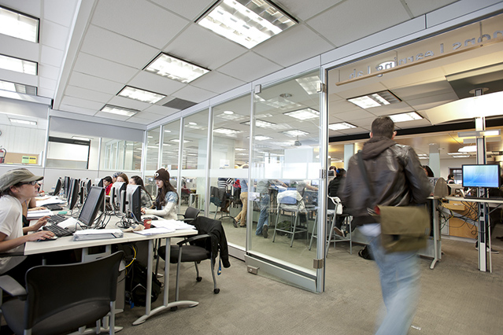

The main Computer Science programs offered for undergraduates are:
- Computer Science
- Computer Engineering
- etc.

Ryerson has a great campus. It is consisted of relatively old buildings but looks completely brand new. There's a student cafe where the food is offered at decent price. Most of the Profs are awesome, but a minor of them has issues they need to resolve in order to get the "awesome teacher" title". Overall, this is a great University.
To give you an idea:
Computer Science
"In years one and two, you will learn the basics of programming, software engineering, data structures,
operating systems and computer architecture. At the same time you will build a firm foundation for problem
solving by taking courses in calculus, linear algebra, discrete mathematics, probability, physics,
communication, management and liberal studies.
In years three and four, you will study database systems, data communications, artificial intelligence,
parsing, algorithms, computer security, and comparison of programming languages. You will also choose from
a wide range of computer science electives in areas such as operating systems, software engineering,
networks, compiler design, graphics, human-computer interaction, web applications, artificial intelligence,
robotics and research (thesis). Your communication skills and background knowledge will be enhanced by four
upper-level liberal studies courses and one or two selections from engineering, business or science. You will
further your mathematical development with one to three courses from a broad list including statistics,
number theory, graph theory, geometry and computability. You may also choose to minor in mathematics"
What you need to apply:
- English/Anglais (ENG4U/EAE4U preferred)
- Advanced Functions (MHF4U)
- One of: Physics (SPH4U), Chemistry (SCH4U), Biology (SBI4U)
- One of: Calculus and Vectors (MCV4U) or Mathematics of Data Management (MDM4U)
- Grade 12 U Calculus and Vectors (MCV4U) is the preferred mathematics course. Completion of Grade 12 U Physics (SPH4U) is recommended.
- The minimum grade(s) required in the subject prerequisites (normally in the 65-70% range) will be determined subject to competition.
Computer Engineering
"The way we live, work and play in our technology-driven, interconnected world is largely influenced by the ideas and
actions of computer engineers. Ryerson graduates use scientific and practical knowledge in digital circuit technology
to create systems and devices that enrich our lives. Distinguished by their versatile skill set, computer engineers
create everything from firmware to hardware to software to interfacing systems that let computer systems communicate
with each other and the outside world.
This program selects students on the basis of academic achievement/grades only. Additional non-academic requirements
are not required for admission consideration."
What you need to apply:
- English/Anglais (ENG4U/EAE4U preferred)
- Advanced Functions (MHF4U)
- Physics (SPH4U)
- Chemistry (SCH4U)
- Calculus and Vectors (MCV4U)
- Note: The grades required in the subject prerequisites (normally 70%) will be determined subject to competition.
"THERE IS NO DOUBT that we live in a hyperconnected digital age, as more of our daily routines become automated with the use of computer technology. Almost every industry has been revolutionized by the computing industry, which depends on the ideas, skills, and support of computer scientists to continue innovating more efficient computer systems. In the Computer Science program, students can learn to do anything: from developing a new computer program and solving end-user problems, to enhancing storage capacity on an existing system. In addition to in-class studies, we provide work placement opportunities, group studies and extra seminars to truly make the most out of your educational experience. Our classrooms also boast a state-of-the-art computing facility and industry-experienced faculty members that come with them."
"First and second year students begin their studies by becoming fluent in prominent programming language (Java, C++), while also building their understanding of data structures, artificial intelligence, operating systems and the software/hardware interface. Third and fourth year tackle the more advanced concepts of operating systems, software engineering, robotics, data communication networks, compiler design, computer graphics, CAD/CAM, computer-assisted learning, artificial intelligence, database systems, multimedia systems, the theory of parsing, and advanced algorithms."